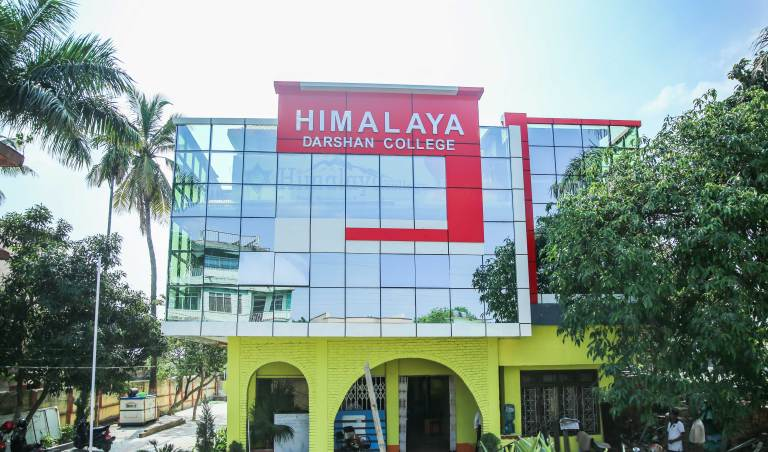

About Us
 Himalaya Darshan College, established in 2070 B.S. provides innovative opportunities in highly academic environment. The College has been established with an objective to promote value based quality education at the graduate level. The college fosters personal and professional growth of the students through its experienced and distinguished faculties, experts and professional from the national level.
The College aims at disseminating quality and competitive education to meet the aspiration of the young students and challenges of the present millennium. The college offers modern value based curriculum in five degree granting programs, based on three disciplines: Science, Management and Humanities.
The mission of Himalaya Darshan College is to cultivate the potential in every student to thrive as a global citizen by inspiring a love of learning and civic engagement, by challenging and supporting every student to achieve academic excellence, and by embracing the full richness and diversity of our community. We seek to create an environment that achieves equity for all students and ensures that each student is a successful learner, is fully respected, and learns to respect others.
Himalaya Darshan College will provide excellent educational opportunities that are responsive to the needs of the community and help students meet economic, social, and environmental challenges to become active participants in shaping the world of the future.